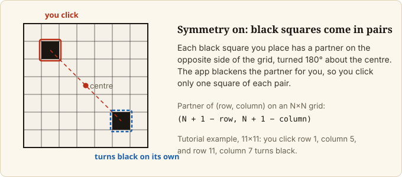
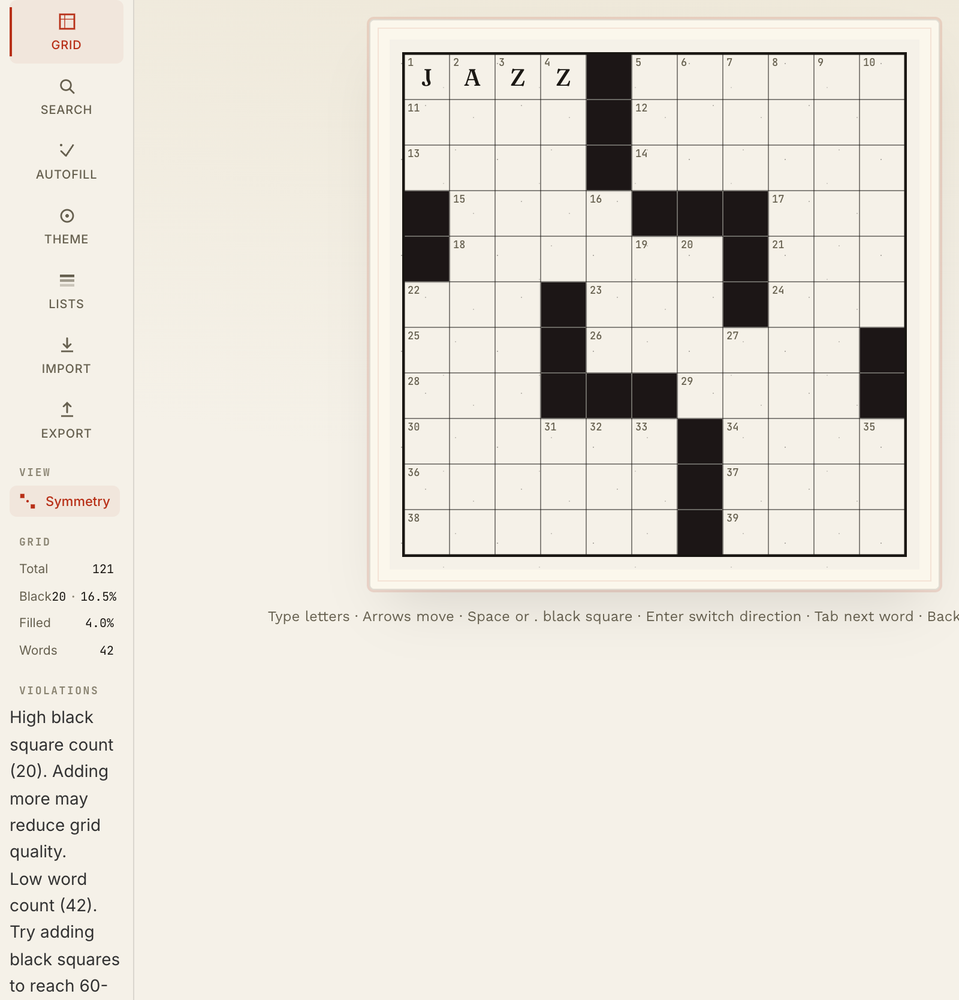
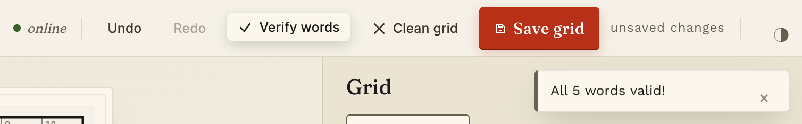
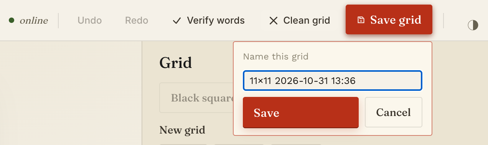

Your first crossword: build, fill, save and export an 11x11 puzzle
Introduction
In this tutorial you build a small crossword in the Crossword Helper web app. You start from an empty 11×11 grid, place black squares, type one word, look up words by pattern, let the app fill the rest, check the result, save it, and export it as a web page.
At the end you have two things: a grid saved in your browser, and a file named crossword.html on your
computer that shows the grid.
You will also see something the app does not hide: autofill can finish with entries that are not valid words. This tutorial shows you how to see them. Your grid will not match the examples letter for letter, because autofill gives different results from run to run. Every step still works whatever it returns.
What you learn: how the main parts of the web app fit together, in the order you use them. Each part has a how-to guide linked at the end for when you want to go further.
Prerequisites
- The app is installed and running. If it is not, follow Install Crossword Helper on macOS first, then come back.
- The app is open in your browser at http://localhost:5000 (or the port you started it on).
- A grid you have not edited. unverified If the current grid already has letters in it, the app may ask you to confirm before step 2 replaces it; this was not tried on this page.
Step-by-step implementation
1. Check that the app is online
Look at the top bar. A status label reads online. The top bar also has the buttons Undo, Redo,
Verify words, Clean grid and Save grid.
On the left is the tool rail: Grid, Search, Autofill, Theme, Lists, Import and Export. This tutorial uses Grid, Search, Autofill and Export.
The app starts with an empty 15×15 grid.

You should see: online in the top bar and an empty grid in the middle of the page.
If the label does not read online, see Troubleshoot common problems.
2. Start an 11×11 grid
- Click Grid in the tool rail. The right-hand panel is titled
Grid. - Under
New grid, click11×11.
You should see: a smaller, empty grid. In the GRID block on the left, Total reads 121 and Black
reads 0.
3. Check that Symmetry is on
In the tool rail, under VIEW, find the Symmetry toggle. It is on by default and shows highlighted when on.
With Symmetry on, every black square you place also turns the square on the opposite side of the grid (turned 180 degrees) black.


You should see: Symmetry highlighted. Leave it on.
4. Place the black squares
To make a square black: click it, then press Space.
Squares are given as row and column, counted from 1 at the top-left corner. Row 1 is the top row and column 1 is the left column. Click, then press Space, on each of these squares:
| Square | Row | Column |
|---|---|---|
| 1 | 1 | 5 |
| 2 | 2 | 5 |
| 3 | 3 | 5 |
| 4 | 4 | 1 |
| 5 | 4 | 6 |
| 6 | 4 | 7 |
| 7 | 4 | 8 |
| 8 | 5 | 1 |
| 9 | 5 | 8 |
| 10 | 6 | 4 |
Do not click the opposite squares yourself. After square 1 (row 1, column 5), the square at row 11, column 7 turns black on its own.
If you black out a wrong square, click Undo, or press Cmd+Z on macOS (Ctrl+Z on Linux). Undo steps
back one edit at a time.
You should see: in the GRID block, Black reads 20 · 16.5% and Words reads 42. The grid has black
squares in the pattern shown by the table and its mirror image.


Below the grid, a hint line lists the keys that work in the grid: "Type letters · Arrows move · Space or . black square · Enter switch direction · Tab next word · Backspace clear".
The VIOLATIONS block on the left now shows advice such as "High black square count (20). Adding more may reduce grid quality." and "Low word count (42). Try adding black squares to reach 60-68." This advice is only a suggestion. Ignore it for this puzzle.
5. Type your first word
- Click the top-left square (row 1, column 1).
- Type J, A, Z, Z.
You should see: the four squares of the first across word fill with J A Z Z, and Filled in the GRID
block reads 4.0%.
6. Check the word with Verify words
Click Verify words in the top bar.
You should see: a message reading "All 5 words valid!".


This is the check you will use again in step 9, when the grid is full.
7. Look up words by pattern
- Click Search in the tool rail.
- In the field with the placeholder "Enter pattern (e.g., ?I?A)", type
C?T. The?stands for one unknown letter. - Click
Search.
You should see: a list headed Results (7). Each entry shows a word, a score and "3 letters", with
the word list named "comprehensive". The words are CAT, CIT, COT, CRT, CST (score 31), then CDT and CUT
(score 26).

The word list is large, and not every entry in it is an everyday word: CRT and CST are in the list too. Keep that in mind when you check the filled grid in step 9.
Searching does not change the grid, and you have used Search only to look. (Clicking a result would write that word into the grid from the selected square; Find words by pattern covers that.)
8. Run autofill
Autofill picks words for the empty squares. Your JAZZ stays.
- Click Autofill in the tool rail. The heading
Autofillis followed by a count of empty slots. With only JAZZ typed, it reads 41 empty slots (a slot is one across or down entry that is not yet completely filled). - Leave
AlgorithmonRepair (Recommended). - Set
Timeoutto1 min. The options run from 1 min to 30 min, and the default is 5 min. A shorter timeout keeps the tutorial short. - Leave everything else as it is:
Min Score: 30, the boxesAdaptive mode,Partial fillandCleanup invalid wordsunticked, andComprehensive Dictionaryticked under Word Lists. - Click
Start Autofill.
You should see, while it runs: the text "Editing is paused while autofill runs." above the grid, a
progress bar with a percentage, a Cancel button, and changing messages such as "Repairing 6 invalid
words". Do not click in the grid until the run ends.

You should see, when it ends: a message like "Filled 42/42 slots — 7 entries may be invalid (use
Verify Words to check)", with two buttons, Keep fill and Reset. Your numbers will differ.

The grid still shows only JAZZ at this point. The fill is held back until you accept it.
- Click
Keep fill.
You should see: the grid full of letters, with JAZZ still in the top row. In the GRID block, Filled
reads 100.0% in the run this page was written from.
Autofill is imperfect. It can return a fill that contains entries which are not valid words. The message above says so: "entries may be invalid". That is why the next step exists. For open autofill issues, see Known Limitations in the README.
If your run ends with Successfully filled N/M slots!, the fill is already in the grid and there is no Keep fill
button: click Reset and carry on. unverified If it ends with another message and no Keep fill button, the grid keeps
the letters it had before the run and steps 10 and 11 still work on it; that outcome was not reached when this
page was written.
9. See which words are invalid
Click Verify words in the top bar.
You should see: a message like "7 of 42 words flagged — 7 invalid: STEFAR, ITKINS, NSENOT, JCL, ZOTRI, ONOA, ESPIA". The flagged words differ in every run. If nothing is flagged, you see "All N words valid!" instead, with N the number of words checked.
The flagged words are marked on the grid: their letters turn red and get a short red underline.

You do not need to fix them to finish this tutorial. The how-to guide
Check and clean a grid covers what to do with them, and the
Clean grid button in the top bar belongs to that guide.
10. Save the grid
- Click
Save gridin the top bar. - A prompt titled "Name this grid" opens. The name field is filled in with a suggestion of the form
11×11 2026-10-29 13:53(your date and time). Keep it. - Click
Save.


You should see: a label next to the button reading saved locally · just now.
The grid is saved in your browser, not in the project folder. To see it, click Grid in the tool rail,
then click Open saved under Saved grids. Your grid is in the list. Do not click Delete on it.
11. Export the grid as HTML
- Click Export in the tool rail.
- In
Export Format, chooseHTML (printable). The other options areJSON (for reimport)andText (simple). - Click
Export.
You should see: your browser downloads a file named crossword.html. Find it where your browser
saves downloads, and open it in a browser.
Opened in a browser, it is a page headed "Crossword Puzzle" with the grid as a table: the square numbers, black squares, and your letters. It holds the grid only, with no clues. unverified How it prints was not checked for this page.

Final result review
You now have:
- an 11×11 puzzle with black squares placed symmetrically,
- the word JAZZ in 1-Across, kept through the autofill,
- a fill from autofill that you accepted, with its doubtful entries listed by
Verify words, - the grid saved in your browser, listed under
Open saved, - a
crossword.htmlfile you can open and print.
Along the way you used the parts of the app you will use for any puzzle: the Grid tool for the grid, the
GRID block for its numbers, Search to look up words, Autofill to fill, Verify words to check,
Save grid to keep your work, and Export to take it out of the app.
Next steps
Each guide below goes deeper on one thing you just did:
- Step 2 to 4, the grid: Set up the grid
- Step 7, finding words: Find words by pattern
- Step 8, filling: Autofill a grid
- Step 9, checking: Check and clean a grid
- Step 10, saving: Save, open and recover your work
- Step 11, exporting: Import and export grids
- Every button and option: Web app reference
- Something went wrong: Troubleshoot common problems
- Open autofill and other issues: Known Limitations
Complete example
Everything you entered, in one place:
| Item | Value |
|---|---|
| New grid | 11×11 |
| Symmetry | on (default) |
| Black squares (row, column) | (1,5) (2,5) (3,5) (4,1) (4,6) (4,7) (4,8) (5,1) (5,8) (6,4) |
| Typed word | JAZZ, from row 1, column 1, across |
| Search pattern | C?T |
| Autofill | Repair (Recommended), Timeout 1 min, other options as they were |
| Export | HTML (printable), file crossword.html |